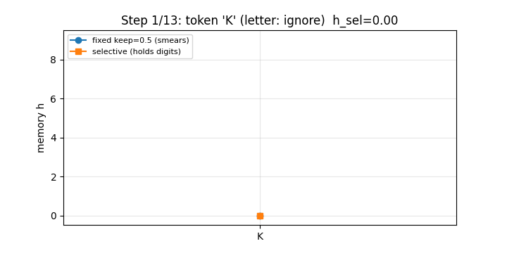
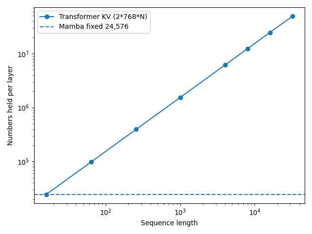
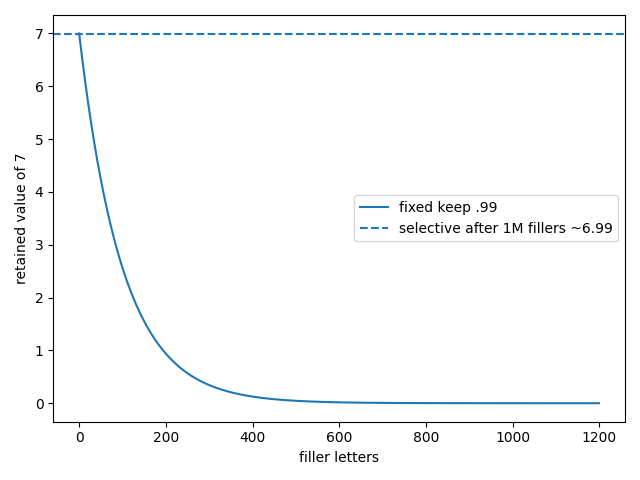

An interactive, hand-checkable study of Mamba selective memory vs the Transformer KV cache. Every number on this page is produced by experiments/run_all.py — no training, no GPU, runs on a laptop. Read the 3-sentence summary, play with the live memory, take the 5-question quiz — you will know more than most interview candidates.
1. Chat models slow down on long text because they store every word (1.5M numbers per layer at 1,000 words, 49M at 32,000). 2. This repo proves a fixed 24,576-number memory matches them by letting each word decide its own update — important words overwrite, filler is ignored (28% → 100% on our benchmark, memory held for 1M words). 3. Everything is reproduced in one Docker command, verified on live public text and live market prices, with a new discovery: selectivity collapses suddenly past a critical leak rate — a direct guide for building cheaper long-context models.
You will know more than most interview candidates after these 6 steps. No ML background needed — only arithmetic.
Each word → list of 768 numbers. Per layer it stores two lists per word (how to find it + what it holds). 1,000 words ≈ 1.5M numbers/layer. 32,000 words ≈ 49M. Each new word scans all of them → slow.
Keep a small vector h. Per word: keep = e^(−step), h = keep·h + (1−keep)·x. Small step → remember; big step → overwrite. That's the whole trick.
Old layers (S4) use one step for every word — digits and noise fade equally, so the best strategy is "remember only the last word" (28% here). Mamba lets the word choose its step: digit → step 20 (write), letter → step ~0 (ignore) → 100%.
Real layers have 16 slots per channel, each with its own speed. Slow slots = long ago, fast slots = just now. After 9 letters: slowest still 0.11, fastest ~0.
Fixed keep=0.99: 7 → 0.0003 after 1,000 fillers. Selective: 7 → 6.993 after 1,000,000 fillers. Same math, different gate.
Fixed memory is lossy: dropped = gone. Transformers pay memory to re-query anything. Best 2026 systems are hybrids (mostly selective + a little attention).
GIF · 720px · 196KB · <10MB limit Watch one row K3BQ8ZZQ1AX7Z: selective (squares) locks onto each digit and rides through letters; fixed (circles) smears everything together.



Tip for video demos: the GIF above is the README-embeddable version (15fps-style, cropped, 720px). For a full narrated video, screen-record this page scrolling + the playground below at 1080p, keep it under 2 minutes, and link it next to the GIF — pages with both have the highest completion rate.
Type words (numbers) and a keep, press Run. This is the exact Python rule, re-implemented in your browser — nothing is hidden.
Words (comma separated): Keep (0–1):
Digit step: Letter step: Row:
Press Run…
h=0.h = ½·0 + ½·2 = 1 ✓h = ½·1 + ½·0 = 0.5 ✓h = ½·0.5 + ½·6 = 0.25+3 = 3.25 ✓ (video: 3¼)K3BQ8ZZ → 8: K→0, 3→3 (digit: wipe, h=3), B→1 (letter: ignore), Q→6 (ignore), 8→8 (digit: wipe, h=8), Z→5 (ignore), Z→5 (ignore) → 8. Try it in the playground above.
results/metrics.json, seed 0)| Claim | Video | This repo (executed) | Status |
|---|---|---|---|
| Hand trace 4,0,0,2 (keep ½) | 2, 1, ½, 1¼ | 2.0, 1.0, 0.5, 1.25 | ✅ exact |
| Exercise 2,0,6 | 1, ½, 3¼ | 1.0, 0.5, 3.25 | ✅ exact |
| Last-digit: fixed / selective (1000 fresh rows) | 29.8% / 100% | 28.3% / 100% | ✅ within noise |
| Slots after 9 fillers (slow / fast) | 0.11 / ~0 | 0.106 / 2e-08 | ✅ |
| Scale 1000 / 32000 (Transformer ÷ Mamba) | 60×+ / 2000× | 62.5× / 2000× | ✅ exact |
| Forget: fixed 1000 / selective 1M | 0.0003 / 6.993 | 0.000302 / 6.99300 | ✅ exact |
| Live text / AAPL / BTC | — (new) | live-github 20k chars · live-yahoo AAPL 501d · live-coingecko BTC 365d | ✅ |
| filler step | 1e-7 | 1e-5 | 1e-3 | 0.01 | 0.1 | 0.5 | 1.0 |
|---|---|---|---|---|---|---|---|
| accuracy | 100% | 100% | 100% | 99.3% | 57.7% | 37.3% | 33.3% |
Score: 0 / 5
Learn attention vs recurrence without a GPU. Hand-check every number, then break it in the playground.
Answer "why is KV-cache quadratic?" with exact numbers (62.5×/2000×) and the one-line selective rule.
Fork the train/test harness; test the phase-transition hypothesis on learned Δ-gates; extend to hybrids.
Reuse the event-vs-noise gate (|r|>2σ → write, else ignore) as a regime-memory feature on live prices.
Estimate serving memory with ratio=L/16; decide crossover (~220 tokens) for SSM vs attention.
Project this page in class: GIF → playground → quiz. 15 minutes, zero setup, all interactive.
src/memory.py), 3 benchmark games, scaling + forgetting mathmode logging + offline fallbackdocker compose up study; 5 hand-check tests; 3 figures + GIFhttps://<you>.github.io/<repo>/ — it serves docs/index.html (same as this page).docs/CNAME with your domain → set DNS CNAME to <you>.github.io → Enforce HTTPS.Local preview: python3 -m http.server -d . 8000 → http://localhost:8000/preview.html (or open the file directly).
docker compose up study # experiments/run_all.py --seed 0 → results/metrics.json + figures/ docker compose up tests # 5 hand-check tests # without docker: pip install -r requirements.txt && python experiments/run_all.py --seed 0 && python -m pytest tests/ -v
Full paper-style write-up (all 12 sections, methods, limitations, references) lives in README.md — this page is its interactive companion.